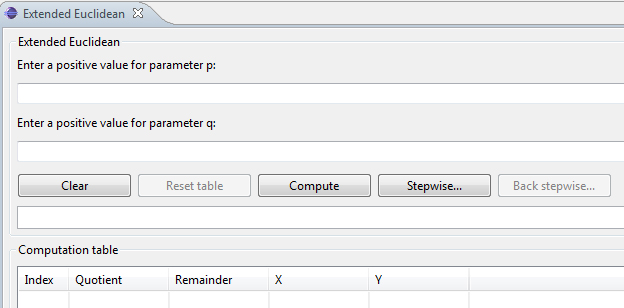
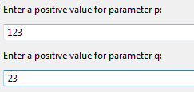
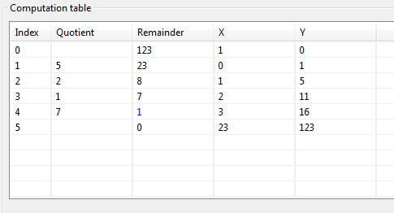
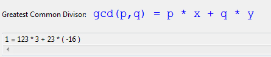
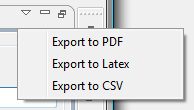

Extended Euclidean
The demonstration is to show the functioning of the Extended Euclidean plug-in.
You can start the plug-in by using the menu visualization. The plug-in is loaded and maximizes his view.

You can enter in the form
p
and
q
two arbitrary large positive numbers.

After that various choices available.
- Clear - deletes the current entry.
- Reset table - removes only the table, the current
Entry is maintained (at the beginning not selectable).
- Compute - performs the calculation.
- Stepwise... - The calculation is carried out gradually. It will perform the next step in the calculation.
- Back stepwise... - the calculation is being gradually
performed. It will run the previous step (at the beginning
not selectable).
The result of the calculation is shown in the area of calculation..
In addition to the visualization block every single step of calculating fully displayed as a table unless you've opted for the compute option..

The table has 5 columns index, Quotient, Remainder, X and Y. The final result is displayed in blue.
In addition, the calculation rule below:
gcd(p,q) = p * x + q * y
and the corresponding calculation appears.

If you choose the stepwise ... Variant then the actual calculation is displayed in color in the calculation table.
In addition, the visualization block, depending progressively filled in by the current position of the calculation table. These colors match the colors of the calculation table. The blue color is always shown in the result of the current calculation.

Now the calculation can be progressive pass through with the button Stepwise ... forward and backward with the button back stepwise .... If the end of the calculation is reached, the button Stepweise ... disabled and the end result of both the bottom and in the calculation table shown. It is also possible to calculate while progressively through on the button compute button to stop the progressive calculation and the calculation carried out completely until the end.
After passing a calculation you can export the result in three formats (PDF, latex, and CSV).

The export is only possible if a calculation has been fully traversed.